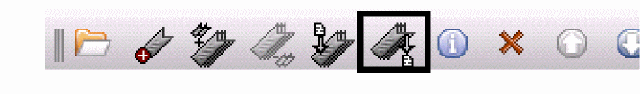

Managing Bookmarks
To begin managing your bookmarks:
-
In your session window or in the Command Interpreter Window (CIW),
choose File – Bookmarks – Manage Bookmarks.
The Bookmarks Manager window appears.
The Bookmarks Manager window contains the following information about your bookmarks:
| Column | Description |
|---|---|
|
Toolbar if the bookmark appears on the Bookmarks toolbar; otherwise, Menu |
Adding a Bookmark
-
In the Bookmarks Manager window, choose Edit – Add.
Alternatively, you can click the Add Bookmark icon on the toolbar:The Add Bookmark form appears so that you can add a bookmark to the current tab in the current session window.
Importing Bookmarks
To import a set of bookmarks from a valid bookmark file:
-
In the Bookmarks Manager window, choose File – Import.
Alternatively, you can click the Import Bookmarks icon on the toolbar:The Import Bookmarks form appears. - Navigate to and select a valid bookmark file.
-
Click Open.
The program imports bookmarks from the selected file.
Exporting Bookmarks
To export your bookmarks to a file:
-
In the Bookmarks Manager window, choose File – Export.
Alternatively, you can click the Export Bookmarks icon on the toolbar:The Export Bookmarks form appears. - Navigate to the location where you want to save your bookmarks file.
- In the File name field, type a name for your bookmarks file.
- Click Save.
Reordering Bookmarks
- In the Bookmark Managers window, select the bookmark entry that you want to move up or down the bookmark list.
-
On the Bookmark’s toolbar, select either the Move up... or Move down... icon to re-position the selected bookmark.
If you want to change the bookmark display order of composite bookmarks, you only be able to re-position them within the composite (collective) bookmark.
Deleting Bookmarks
To delete one or more bookmarks:
-
In the Bookmarks Manager window, select one or more bookmark names.
You can select a single bookmark, a composite bookmark, a single view that is part of a composite bookmark, or any combination of these. -
Choose Edit – Delete.
Alternatively, you can click the Delete Bookmarks icon on the toolbar:The program deletes the bookmarks you selected.
Editing Bookmark Properties
To change the name, description, or position of a bookmark:
-
In the Bookmarks Manager window, choose Edit – Properties.
Alternatively, you can click the Edit Bookmark Properties icon on the toolbar:The Edit Bookmark Properties form appears. - (Optional) In the Name field, edit the name of your bookmark.
- (Optional) In the Description field, edit the description of your bookmark.
-
If you want your bookmark to appear on the Bookmarks toolbar, make sure there is a mark in the Add to Bookmarks Toolbar check box.
If you do not mark the Add to Bookmarks Toolbar check box, your bookmark appears on the File – Bookmarks submenus only. (You can choose File – Bookmarks in the session window or in the Command Interpreter Window.) -
Click OK.
The changes you made appear in the Bookmarks Manager window.
Opening Bookmarked Views
To open a bookmarked view or views:
- In the Bookmarks Manager window, select one or more bookmarks.
-
Choose File – Open.
Alternatively, you can click the Open Bookmarks icon on the toolbar:The program opens the items you selected. Each selected item appears in a new session window.If you expand a composite bookmark before making your selections, be aware that each selected line in the Bookmarks Manager window counts as a selected item (up and down movement is restricted within the composite bookmark itself). The program opens each selected item in its own session window. For example, if you expand a composite bookmark containing two cellviews and select all three lines in the Bookmarks Manager window like this:when you choose File – Open, three session windows appear:
Searching for Bookmarks
-
In the Search field, type the search string.
The program looks for matching strings in the Name, Location, and Description columns.
As you type, the Bookmarks Manager filters all bookmarks such that only those whose names, locations, or descriptions contain the search string appear in the window. If the program finds a matching string in a bookmark that is part of a composite bookmark, the program displays the expanded tree for that composite bookmark so that you can see the matching string.
You can restore the complete list by deleting the search string.
Related Topics
Return to top